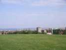
Le terrain d'Outreau, c'est un grand parc sur une colline qui domine la ville et le port de Boulogne. Le port a son Jardin à lui, avec ses éoliennes électrogènes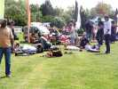
La rencontre d'Outreau abrite aussi le championnat d'Europe des combattants... Voisinage dangereux, aggravé par la suffisance et l'indiscipline des combattants qui accaparent une bonne partie de la surface utilisable, et vont en plus voler dans le dos des monofils. Résultat : le samedi, au moins 3 monofils coupés, dont un à la toile déchirée ! Alors on n'ose plus voler, on reste au ras du sol. Mais on ne vient pas là pour voler stressés, alors on verra l'an prochain si on participe à la fête dans ces conditions...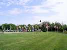
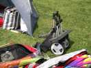
Pour monter le matos depuis les voitures, certains ont des chariots astucieux, avec de grandes roues et pliants...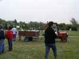
Mais il y a surtout les navettes de la Municipalité, qui montent et descendent le matériel ou le personnel sans arrêt...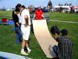
On se montre des cerfs-volants, mais aussi des plans, ici celui d'un nounours reproduit grandeur nature, plus qu'à découper, à porter sur la toile et à couper !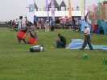
Vu la taille des piquets que Sylvain enfonce, il y aurait de la raie dans l'air que ça ne m'étonnerait pas !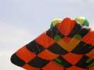
Gagné, il a sorti la plus grande...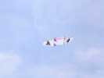
Côté Belgique, Michel et Astrid sont arrivés et ont monté leur Faga d'identité...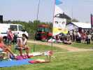
Côté Hollande, Peter et Ans sont bien là, en direct de Fécamp, la moustache (de Peter) fièrement dressée et affichée...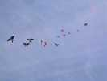
Peter a une jolie grappe d'oiseaux qui volent dans tous les sens, mais en moyenne vers le haut...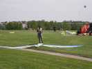
Une fois tout ça monté, Peter a le temps de se livrer à un peu d'espionnage industriel sur Megoel !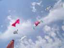
Les Gwenn Ha Du et les Pirates sont là, et un peu là, pour les démos et les initiations à la traction !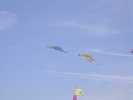
On retrouve les 2 pyros inversés jaune/bleu ou bleu/jaune vus à Stella-Plage !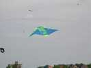
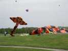
Mais le vent tombe un peu, et Sylvain sort sa petite raie, plus facile à manier, mais aussi joueuse...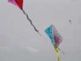
Ludo, en plus de la gestion du Championnat de combattants a monté un atelier pour les enfants. Le dimanche, les CVs papier souffriront malheureusement vite de la pluie...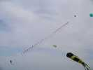
...et un train monte, mais ce n'est pas très honnête, il est pendu sous un Rokkaku, et fait ainsi plutôt figure d'ornement de ligne...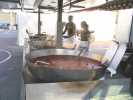
Le samedi soir, grand repas sous les barnums disposés en patio. Les généreuses poêles de paella et de couscous attendent la ruée des invités !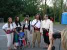
Les Pirates se sont mis comme d'hab sur leur 31 !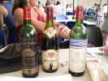
Et Fabrice a amené quelques bouteilles, d'incroyables folies : Pommard 2000, Pomerol 1986, Mouton-Rotschild 1986, il y en a bien pour 2 briques !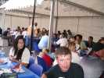
Dîner sous les barnums, assis à table par un doux soir d'été, le rêve...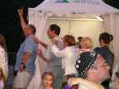
Après le repas, on danse ! Patrick est déchaîné, Jean-Claude dans... avec son fils !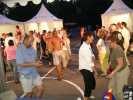
Madame le Maire se défonce avec un beau jeune homme demi-nu...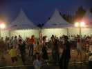
Des ateliers pour enfants étaient aussi au menu... Construction de bateaux avec des bouteilles, du contreplaqué et du plastique.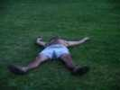
Sa performance avec les autorités a marqué Will qui a besoin de se rafraîchir...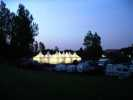
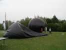
Dimanche matin, gris et brumasseux, Jean-Claude et François gonflent leurs ballons solaires à la première heure, mais il y a déjà un peu trop de vent (et pas de soleil...) et ça ne montera pas...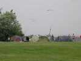
Les pilotables commencent à répéter sur leur terrain. Ils ne seront pas très nombreux en 2 lignes, mais les Nasas voleront sans arrêt...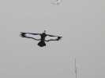
A côté de mon Condor, je vois monter un beau Gypaète très simple et très stable...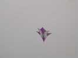
Michel Chantren a monté un Eddy modifié, ou plutôt une Jessica light (voir le reportage Hirel) mais à deux étages !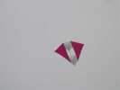
Encore un classique, le Conyne que je faisais voler à 7 ans...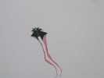
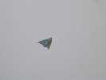
Les pyrodeltas inverses ont à coeur de prouver que les queues, c'est juste pour la déco et qu'ils peuvent voler sans ...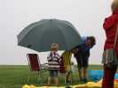
Sous le crachin qui s'installe, un bon parapluie est nécessaire...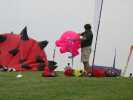
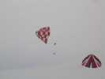
Les Gwenn portent la Bretagne dans leur coeur, ils volent maintenant avec les drapeaux Breizh !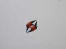
La xBox, pas celle de Damien, dont la toile a été coupée sur 30 cm par un combattant, mais celle de son copain...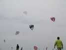
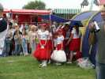
Sous la tente de Bernard, les Pompom-girls se préparent (tiens, au fait, je n'ai pas vu se produire les majorettes et la fanfare qui sont venus déjeuner)...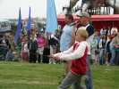
Dans les démos, le Champion de France (ou d'Europe ?) junior, 12 ans, qui se débrouille comme un chef, malgré un vent très faiblard...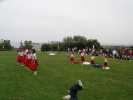
Ca y est, les Pompoms sont sur le terrain. Bonne volonté : 20/20, chorégraphie : 10/20, synchronisme euh... Fait pas très beau aujourd'hui, hein ?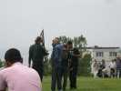
Et en final, la... finale des Championnats de Combattants. Ils sont deux frères (pas siamois, indiens) et c'est un des deux qui gagne (surprise !) !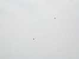
Pour les passionnés, voici une photo du combat au téléobjectif...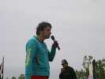
Il faut toute la passion et les explications de Ludo pour que le public suive ces petits points dans le ciel, surtout quand le round d'observation s'éternise... Heureusement, la finale elle-même a duré... 10 secondes !